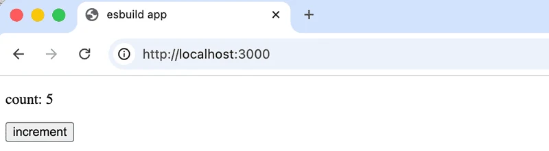
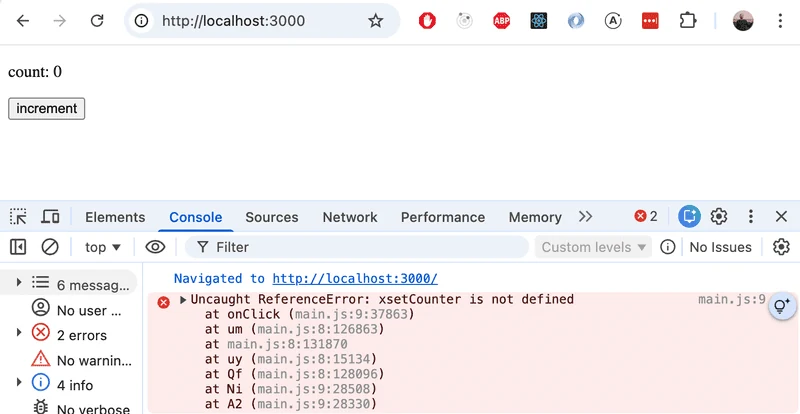
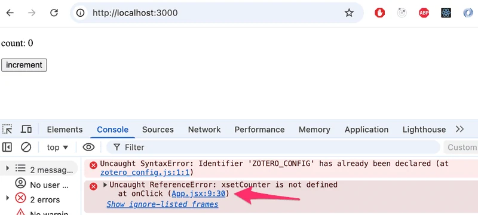

داخلية Vite وesbuild
في الأيام الأولى، اشتهر React نوعاً ما بأن تهيئة الأدوات اللازمة لتطوير التطبيقات كانت بالغة الصعوبة. ولتسهيل الأمر طُوِّر Create React App الذي أزال المشكلات المتعلقة بالتهيئة. ومنذ ذلك الحين حلّ Vite، المستخدم في هذا المقرر، محل Create React App كأداة معيارية لتطبيقات React الجديدة.
يستخدم كل من Vite وCreate React App أدوات تجميع الحزم (bundlers) للقيام بالعمل الفعلي. في هذا القسم سنلقي نظرة أقرب على ما تفعله أدوات تجميع الحزم فعلاً، وكيف يعمل Vite في الخلفية، وكيف نُهيّئه لسيناريوهات مختلفة. سنفحص أيضاً بإيجاز esbuild، وهي أداة تجميع منخفضة المستوى يستخدمها Vite داخلياً؛ وفهم esbuild يساعد في توضيح ما يعنيه تجميع الحزم جوهرياً.
ماذا عن Webpack؟
كان Webpack أداة تجميع الحزم المهيمنة في معظم سنوات العقد 2010، ولا يزال يُصادف في قواعد الشيفرة القديمة وفي المؤسسات. غطّى هذا المقرر أيضاً Webpack حتى ربيع 2026.
إذا كنت تعمل على مشروع قديم، فمن المفيد أن تعرف أن Webpack موجود ويستخدم المفاهيم الجوهرية نفسها (نقاط الدخول، والمحمّلات/الإضافات، والمخرجات). ومع ذلك، لا يُنصح بإعداد مشروع جديد باستخدام Webpack في 2026. فتهيئته معقدة، والأدوات الحديثة مثل Vite تقدم تجربة مطوّر أفضل بكثير. لن نغطي تهيئة Webpack في هذا المقرر.
تجميع الحزم
لقد نفّذنا تطبيقاتنا بتقسيم شيفرتنا إلى وحدات منفصلة تُستورَد إلى المواضع التي تحتاجها. ورغم أن وحدات ES6 معرّفة في معيار ECMAScript، فإنه ليست كل بيئات التنفيذ تتعامل تلقائياً مع الشيفرة القائمة على الوحدات. حتى المتصفحات الحديثة تستفيد من معالجة الاعتماديات مسبقاً وتحسينها قبل توصيلها.
ولهذا السبب، تُجمَّع الشيفرة المقسمة إلى وحدات للإنتاج، أي أن ملفات الشيفرة المصدرية تُحوَّل وتُدمج في مجموعة محسّنة من الملفات يمكن للمتصفح تحميلها بكفاءة. عندما شغّلنا npm run build في الأجزاء السابقة من هذا المقرر، قام Vite بعملية التجميع هذه. تظهر المخرجات في مجلد dist:
├── assets
│ ├── index-d526a0c5.css
│ ├── index-e92ae01e.js
│ └── react-35ef61ed.svg
├── index.html
└── vite.svg
يحمّل ملف index.html في الجذر ملف JavaScript المجمّع عبر وسم script:
<!doctype html>
<html lang="en">
<head>
<meta charset="UTF-8" />
<link rel="icon" type="image/svg+xml" href="/vite.svg" />
<meta name="viewport" content="width=device-width, initial-scale=1.0" />
<title>Vite + React</title>
// BEGIN HIGHLIGHT
<script type="module" crossorigin src="/assets/index-e92ae01e.js"></script>
// END HIGHLIGHT
// BEGIN HIGHLIGHT
<link rel="stylesheet" href="/assets/index-d526a0c5.css">
// END HIGHLIGHT
</head>
<body>
<div id="root"></div>
</body>
</html>
تُجمَّع CSS أيضاً في ملف واحد.
عملياً، يبدأ تجميع الحزم من نقطة دخول (entry point)، وهي عادةً main.jsx. لا يضم Vite الشيفرة من نقطة الدخول فحسب، بل أيضاً كل ما تستورده، بشكل متكرر، حتى تُحلّ كامل شبكة الاعتماديات.
ولأن جزءاً من الملفات المستوردة عبارة عن حزم مثل React وReact-router وAxios، فإن ملف JavaScript المجمّع سيحتوي أيضاً على محتويات كل من هذه المكتبات.
قبل توفر أدوات تجميع الحزم، كان الأسلوب القديم يعتمد على أن ملف index.html يحمّل كل ملفات JavaScript المنفصلة للتطبيق بمساعدة وسوم script. أدى ذلك إلى تراجع الأداء، لأن تحميل كل ملف منفصل يسبب بعض التكلفة الإضافية. ولهذا السبب، فإن الطريقة المفضلة اليوم هي تجميع الشيفرة في ملف واحد. كما يتيح تجميع الحزم تحسينات مثل التصغير (minification) وtree-shaking (إزالة الشيفرة غير المستخدمة).
كيف يعمل Vite
لـ Vite وضعا تشغيل مختلفان يعملان بطريقتين مختلفتين تماماً.
وضع التطوير (npm run dev) لا يجمّع شيفرتك إطلاقاً. بدلاً من ذلك، يشغّل Vite خادم تطوير يقدّم ملفاتك المصدرية كوحدات ES أصلية، تاركاً للمتصفح حلّ الاستيرادات مباشرة. ولهذا يكون بدء التشغيل فورياً تقريباً بصرف النظر عن حجم المشروع. هناك استثناء واحد: اعتماديات الطرف الثالث من node_modules تُجمَّع مسبقاً بواسطة esbuild قبل تشغيل الخادم. يعالج هذا مشكلتين: كثير من حزم npm لا تزال بصيغة CommonJS (التي لا تستطيع المتصفحات استهلاكها أصلياً)، وبعض المكتبات تتكون من مئات الملفات الداخلية الصغيرة التي قد تتسبب لولا ذلك في مئات الطلبات المنفصلة. يحوّلها esbuild ويدمجها، ويخزّن النتيجة مؤقتاً على القرص، فتصبح عمليات التشغيل اللاحقة فورية تقريباً.
وضع الإنتاج (npm run build) يستخدم Rollup لتجميع الحزم، بينما يظل esbuild يتولى مهام أخرى مثل التحويل (transpilation) (JSX وTypeScript) والتصغير. صُمّم Rollup من الأساس لوحدات ES، مما يجعله بارعاً استثنائياً في tree-shaking وهي تقنية تحلل بشكل ساكن أي الصادرات من كل وحدة تُستخدم فعلاً وتزيل الباقي من الحزمة النهائية. مثلاً، إذا استوردت دالة مساعدة واحدة فقط من مكتبة كبيرة، يضمن tree-shaking ألا تُضمَّن بقية شيفرة تلك المكتبة في الحزمة. وهذا يمكن أن يقلل حجم الحزمة بشكل كبير.
تقسيم العمل، esbuild للسرعة وRollup لجودة الحزمة، أمر جوهري في تصميم Vite.
قد تتساءل لماذا لا يستخدم Vite أداة esbuild أيضاً لتجميع حزم الإنتاج، نظراً لسرعته الكبيرة. السبب هو أن مخرجات تجميع esbuild، رغم صحتها، تنتج نتائج أقل تحسيناً في السيناريوهات المتقدمة: فدعمه لتقسيم الشيفرة محدود، ولا ينتج المستوى نفسه من تحسين القطع (chunks)، ولا يزال نظامه البيئي من الإضافات الخاص بالتحويلات على مستوى الحزمة في طور النضوج. مخرجات Rollup أكثر قابلية للتنبؤ وأفضل ضبطاً لشبكات الاعتماديات المعقدة التي تنتجها التطبيقات الحقيقية. وقد صرّح مؤلفو Vite بأنهم يعتزمون التحول إلى esbuild لتجميع حزم الإنتاج بمجرد أن تسدّ قدراته هذه الفجوة.
فهم esbuild
لفهم ما يتضمنه تجميع الحزم جوهرياً، من المفيد العمل مع esbuild مباشرة، دون طبقة التجريد التي يضيفها Vite فوقها. لنبنِ بيئة React بسيطة من الصفر.
بعد ذلك، سننشئ تطبيق React بسيطاً بالبنية المجلدية التالية:
├── dist
│ └── index.html
├── src
│ ├── main.jsx
│ └── App.jsx
└── package.json
نبدأ بتثبيت React وreact-dom:
npm install react react-dom
نحتاج أيضاً إلى تثبيت esbuild:
npm install --save-dev esbuild
في البداية نضيف سكربتين إلى package.json:
{
"scripts": {
"build": "esbuild src/main.jsx --bundle --outfile=dist/main.js --jsx=automatic",
"serve": "npx serve dist"
},
// ...
}
نحتاج للتطبيق إلى الملف dist/index.html الذي يحمّل حزمة JavaScript:
<!DOCTYPE html>
<html lang="en">
<head>
<meta charset="UTF-8" />
<title>esbuild app</title>
</head>
<body>
<div id="root"></div>
<script src="./main.js"></script>
</body>
</html>
نقطة الدخول src/main.jsx هي المعتادة:
import React from 'react'
import ReactDOM from 'react-dom/client'
import App from './App'
ReactDOM.createRoot(document.getElementById('root')).render(<App />)
مكوّن التطبيق البسيط src/App.jsx كما يلي:
import React, { useState } from 'react'
const App = () => {
const [counter, setCounter] = useState(0)
return (
<div>
<p>count: {counter}</p>
<button onClick={() => setCounter(counter + 1)}>increment</ button>
</div>
)
}
export default App
الآن يمكننا تجميع التطبيق:
npm run build
المخرج هو ملف واحد dist/main.js يحتوي شيفرة تطبيقك مع مكتبة React مجمّعة معاً.
يمكننا الآن تشغيل التطبيق المجمّع عبر npm run serve. يستخدم هذا حزمة serve لبدء خادم ملفات ساكن محلي لمجلد dist، مما يجعل التطبيق متاحاً على http://localhost:3000:

يدعم esbuild أيضاً التصغير عبر أعلام سطر الأوامر. يزيل التصغير المسافات البيضاء والتعليقات، ويقصّر أسماء المتغيرات، ويطبق تحسينات أخرى للحجم. ستكون الحزمة كبيرة بشكل ملحوظ لأنها تتضمن مكتبة React كاملة. يقلل التصغير حجمها بشكل كبير.
لنُمكّن التصغير الآن:
{
"scripts": {
// BEGIN HIGHLIGHT
"build": "esbuild src/main.jsx --bundle --minify --outfile=dist/main.js --jsx=automatic",
// END HIGHLIGHT
"serve": "npx serve dist"
}
}
يخفض التصغير حجم الحزمة من نحو 1.1 MB إلى نحو 190 KB، وهو انخفاض كبير.
للتصغير مشكلة: إذا ألقى التطبيق خطأ أثناء التشغيل، ستشير أدوات مطوّري المتصفح إلى سطر في ملف main.js المصغّر، وهو أمر شبه مستحيل القراءة:

الحل هو خريطة المصدر (source map): ملف مرافق (dist/main.js.map) يسجّل كيف يقابل كل سطر من الحزمة المصغّرة الشيفرة الأصلية. عند تمكينها، يشير تتبّع المكدس إلى السطر الدقيق في App.jsx أو main.jsx بدلاً من مكان ما داخل جدار غير مقروء من الشيفرة المصغّرة.
يمكننا تمكين خرائط المصدر بإضافة العلم --sourcemap:
{
"scripts": {
// BEGIN HIGHLIGHT
"build": "esbuild src/main.jsx --bundle --minify --sourcemap --outfile=dist/main.js --jsx=automatic",
// END HIGHLIGHT
"serve": "npx serve dist"
}
}
الآن صار الخطأ مفهوماً:

لاحظ أن خرائط المصدر لا تقدر بثمن أثناء التطوير وتصحيح الأخطاء، لكن قد ترغب في استبعادها من بناء إنتاجي عام. لأن خريطة المصدر تحتوي شيفرتك المصدرية الأصلية، يمكن لأي شخص يفتح أدوات مطوّري المتصفح أن يقرأ منطق تطبيقك غير المصغّر. إذا كان ذلك يقلقك، فما عليك سوى حذف العلم --sourcemap من أمر بناء الإنتاج.
التحويل
إلى جانب تجميع الحزم، يؤدي esbuild مهمة جوهرية أخرى: التحويل (transpilation). يعني التحويل تحويل شيفرة مصدرية مكتوبة بصيغة من JavaScript إلى صيغة أخرى، عادةً من صيغة حديثة أو موسّعة إلى JavaScript عادي يمكن للمتصفحات تنفيذه.
تفهم المتصفحات JavaScript المعياري، لكن JSX ليس JavaScript صالحاً، ولا يمكن لأي متصفح تحليله مباشرة. عندما نكتب:
const element = <App />
يجب تحويله إلى شيء يمكن للمتصفح تشغيله:
const element = React.createElement(App, null)
ولهذا فإن التحويل خطوة مطلوبة لأي مشروع React، وليس تحسيناً اختيارياً. ينفذه esbuild تلقائياً أثناء تجميع الحزم. مع العلم --jsx=automatic، يتعامل esbuild مع JSX دون أي أداة خارجية. في سير العمل القديم القائم على Webpack كان عليك تثبيت Babel والحزم المتعلقة به وتهيئتها لتحويل JSX من أجل المتصفح. مع esbuild، تُحوَّل الملفات المنتهية بـ .jsx مباشرة دون إعداد إضافي.
بيئة التطوير
حتى الآن، كل تغيير يتطلب تشغيل npm run build وتحديث المتصفح يدوياً، وهي حلقة بطيئة سرعان ما تصبح مملة. يحل هذا خادم التطوير المدمج في esbuild. أضف سكربت dev إلى package.json:
{
"scripts": {
"build": "esbuild src/main.jsx --bundle --minify --sourcemap --outfile=dist/main.js --jsx=automatic",
"serve": "npx serve dist",
// BEGIN HIGHLIGHT
"dev": "esbuild src/main.jsx --bundle --outfile=dist/main.js --jsx=automatic --servedir=./dist --watch"
// END HIGHLIGHT
}
}
تشغيل npm run dev يفعل شيئين في آن واحد. أولاً يخبر --watch esbuild بمراقبة كل ملفات المصدر المستوردة بحثاً عن تغييرات وإعادة بناء الحزمة تلقائياً كلما حُفظ أي منها. ثانياً يبدأ --servedir خادم HTTP خفيفاً يقدّم محتويات مجلد dist، أي index.html وملف main.js المبني حديثاً، على http://localhost:8000.
العلم --servedir هو ما يجعل الجزأين يعملان معاً: بدونه، سيعيد esbuild البناء في وضع المراقبة فقط لكنه لن يقدّم أي شيء. معه، يوصّل الخادم دائماً أحدث حزمة، فلا تحتاج سوى تحديث المتصفح بعد حفظ الملف.
لاحظ أنه بخلاف خادم التطوير في Vite، لا يدعم esbuild الاستبدال الحار للوحدات. تتطلب التغييرات في شيفرتك المصدرية تحديث المتصفح يدوياً لتسري.
توضح بساطة واجهة esbuild ما تفعله أداة تجميع الحزم جوهرياً: تأخذ نقطة دخول، وتتبع كل الاستيرادات، وتنتج مخرجاً محسّناً. يبني Vite على هذه الأساس ويضيف طبقة تجربة المطوّر، خادم تطوير، والاستبدال الحار للوحدات، وإعدادات افتراضية معقولة لمشاريع React.
الآن بعد أن صارت لدينا صورة أوضح عما يتضمنه تجميع الحزم والتحويل جوهرياً، لنعد إلى Vite وننظر في كيفية تهيئته.
تهيئة Vite
لمعظم مشاريع React، يعمل Vite دون أي تهيئة إطلاقاً. لكن عندما تحتاج فعلاً إلى تخصيص السلوك، تعدّل vite.config.js (أو vite.config.ts).
تبدو تهيئة Vite الدنيا لمشروع React هكذا:
import { defineConfig } from 'vite'
import react from '@vitejs/plugin-react'
export default defineConfig({
plugins: [react()],
})
تمكّن إضافة @vitejs/plugin-react تحويل JSX، والتحديث السريع (الاستبدال الحار للوحدات الذي يحافظ على حالة المكوّن)، وميزات أخرى خاصة بـ React.
تهيئة خادم التطوير
يمكنك تهيئة منفذ خادم التطوير وإعدادات أخرى تحت المفتاح server:
export default defineConfig({
plugins: [react()],
server: {
port: 3000,
open: true, // فتح المتصفح تلقائياً
},
})
تمرير طلبات API عبر وسيط
عند التطوير محلياً، يعمل تطبيق React عادةً على منفذ (مثلاً 3000) بينما تعمل الواجهة الخلفية على آخر (مثلاً 3001). ستمنع سياسة الأصل نفسه في المتصفح عادةً الطلبات بينهما. يحل إعداد الوسيط في Vite هذه المشكلة دون الحاجة إلى تهيئة CORS في الواجهة الخلفية:
export default defineConfig({
plugins: [react()],
server: {
port: 3000,
proxy: {
'/api': {
target: 'http://localhost:3001',
changeOrigin: true,
},
},
},
})
مع هذه التهيئة، يُمرَّر أي طلب يرسله تطبيق React إلى /api/notes تلقائياً إلى http://localhost:3001/api/notes بواسطة خادم التطوير في Vite. لا تحتاج شيفرة واجهتك الأمامية أبداً إلى تضمين localhost:3001 في عناوين URL أثناء التطوير.
متغيرات البيئة
يدعم Vite مدمجاً متغيرات البيئة باستخدام ملفات .env. هذا هو البديل الحديث لحقن الثوابت يدوياً في الحزمة.
أنشئ ملف .env في جذر المشروع:
VITE_BACKEND_URL=http://localhost:3001/api/notes
وملف .env.production لقيم الإنتاج:
VITE_BACKEND_URL=https://myapp.fly.dev/api/notes
مهم: يجب أن تبدأ كل متغيرات البيئة المكشوفة للمتصفح بالبادئة VITE_. تبقى المتغيرات بدون هذه البادئة على الخادم فقط ولا تُضمَّن في الحزمة. هذا إجراء أمني متعمد لمنع تسريب الأسرار عن غير قصد.
يمكنك الوصول إلى المتغير في شيفرة تطبيقك عبر import.meta.env:
const App = () => {
const notes = useNotes(import.meta.env.VITE_BACKEND_URL)
return (
<div>
{notes.length} notes on server {import.meta.env.VITE_BACKEND_URL}
</div>
)
}
يختار Vite تلقائياً ملف .env الصحيح بناءً على الوضع:
- npm run dev يستخدم .env و.env.development
- npm run build يستخدم .env و.env.production
أضف .env.production إلى .gitignore إذا كان يحتوي قيماً حساسة، واستخدم .env.example لتوثيق المتغيرات المطلوبة.
التحويل
يتولى Vite تحويل الشيفرة تلقائياً. أثناء التطوير، يحوّل esbuild ملفات TypeScript وJSX عند الطلب. إنه سريع بما يكفي لفعل ذلك لكل ملف دون تأخير ملحوظ. أثناء عمليات بناء الإنتاج، يتولى Rollup تجميع الحزم بينما يتولى esbuild التحويل.
الهدف الافتراضي للتحويل في Vite هو المتصفحات الحديثة التي تدعم وحدات ES الأصلية (Chrome 87+، Firefox 78+، Safari 14+، Edge 88+). إذا كنت تحتاج إلى دعم متصفحات أقدم، يمكنك تهيئة الهدف صراحةً وإضافة إضافة @vitejs/plugin-legacy:
npm install --save-dev @vitejs/plugin-legacy
import { defineConfig } from 'vite'
import react from '@vitejs/plugin-react'
import legacy from '@vitejs/plugin-legacy'
export default defineConfig({
plugins: [
react(),
legacy({
targets: ['defaults', 'not IE 11'],
}),
],
})
تنشئ إضافة legacy تلقائياً حزمة منفصلة للمتصفحات الأقدم باستخدام Babel.
CSS
يتعامل Vite مع CSS دون أي تهيئة. ما عليك سوى استيراد ملف CSS من JavaScript:
import './index.css'
سيعالجه Vite ويضمّنه في البناء. في الإنتاج، تُستخرج CSS إلى ملف منفصل. أثناء التطوير، تُحقن عبر وسوم <style> مع دعم إعادة التحميل الحار.
يدعم Vite أيضاً أصلياً وحدات CSS للأنماط محدودة النطاق. يُعامل أي ملف ينتهي بـ .module.css كوحدة CSS:
import styles from './App.module.css'
const App = () => (
<div className={styles.container}>
hello vite
</div>
)
يمكن إضافة معالجات CSS المسبقة مثل Sass بمجرد تثبيت المعالج المسبق، دون إضافة أو تهيئة:
npm install --save-dev sass
بعد ذلك، تعمل ملفات .scss تلقائياً.
التصغير
عند تشغيل npm run build، يصغّر Vite المخرجات. يزيل التصغير المسافات البيضاء والتعليقات، ويقصّر أسماء المتغيرات، ويطبق تحسينات أخرى للحجم. النتيجة ملف أصغر بكثير يُحمَّل أسرع في المتصفح.
يستخدم Vite أداة esbuild لتصغير JavaScript ومصغّر CSS مدمجاً لأوراق الأنماط.
خرائط المصدر
تسمح خرائط المصدر لأدوات مطوّري المتصفح بإرجاع الأخطاء ونقاط التوقف إلى شيفرتك المصدرية الأصلية بدلاً من الحزمة المصغّرة. بدونها، يصبح تتبّع مكدس يشير إلى السطر 1 من main.js شبه عديم الفائدة لتصحيح الأخطاء.
في التطوير، يولّد Vite خرائط المصدر تلقائياً. لعمليات بناء الإنتاج، يمكنك تمكينها صراحةً:
export default defineConfig({
plugins: [react()],
build: {
sourcemap: true,
},
})
لاحظ أن خرائط مصدر الإنتاج تزيد وقت البناء وتكشف شيفرتك المصدرية لأي شخص ينظر إلى تبويب الشبكة. في كثير من الحالات يكون من الأفضل رفع خرائط المصدر إلى خدمة مراقبة الأخطاء (مثل Sentry) وإبقاؤها خارج الخادم العام.
الإضافات
تُوسَّع وظائف Vite عبر الإضافات. نما نظام الإضافات البيئي بسرعة ويغطي معظم الاحتياجات الشائعة. من الإضافات المستخدمة على نطاق واسع:
- @vitejs/plugin-react — دعم React (JSX، التحديث السريع)
- @vitejs/plugin-legacy — دعم المتصفحات القديمة
- vite-plugin-svgr — استيراد ملفات SVG كمكوّنات React
- rollup-plugin-visualizer — تحليل حجم الحزمة
تُحدَّد الإضافات في مصفوفة plugins في vite.config.js. وهي تتبع الواجهة نفسها التي تتبعها إضافات Rollup، لذا تعمل كثير من إضافات Rollup أيضاً مع Vite.
الحشوات التعويضية
الحشوة التعويضية (polyfill) هي شيفرة تنفّذ ميزة للمتصفحات التي لا تدعمها أصلياً. لا يكفي التحويل وحده للميزات الصحيحة نحوياً لكن غير المنفَّذة. مثلاً، قد يحلل متصفح أقدم Promise بشكل صحيح لكن ليس لديه تنفيذ له.
مع Vite، تتولى الإضافة @vitejs/plugin-legacy الحشوات التعويضية، إذ تضمّن تلقائياً الحشوات اللازمة بناءً على أهداف المتصفحات لديك. إذا احتجت حشوة تعويضية محددة دون إضافة legacy، يمكنك تثبيتها مباشرة واستيرادها في أعلى ملف الدخول.
يمكنك التحقق من دعم المتصفحات لواجهات API محددة على https://caniuse.com أو توثيق MDN من Mozilla.